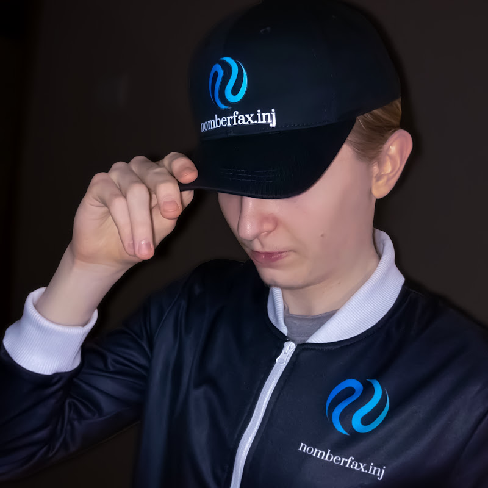

Web3 video creator
& crypto storyteller
I'm NomberFax. I turn complex crypto into short, clear videos, threads and visuals. Ambassador for 30+ Web3 projects and Injective Ambassador since February 2024.
A creator who explains crypto in plain language
Hi! I'm NomberFax, a content creator and graphic designer focused on crypto and Web3.
I've been creating digital content for over 10 years and have been involved in crypto since 2019. As an Injective Ambassador, I regularly produce explainer videos, X threads, infographics, dApp reviews, tutorials, and campaign content for the ecosystem.
I've also collaborated with projects including 1inch, Viction, STON.fi, TRIO, FluidTokens, BingX, Cookie3, and many others.
My signature format is short, face-to-camera videos with custom-branded thumbnails, covering crypto news, ecosystem updates, useful tools, all kinds of guides and other creative content. I primarily publish on X, combining research, visual storytelling, and hands-on experience in Web3.
My toolkit: Adobe Photoshop for graphics, Premiere Pro and CapCut for video.

What I do
- Video explainers & guides
- Threads and infographics on X
- Graphics, art and 3D for projects
- Posts on X and CoinMarketCap
- Campaigns, raids, moderation
Where I work now, and where I've been
My Injective journey map
41 stops: IRL actions, videos, threads, NFTs, milestones and my most unusual posts. Click any star.
“The way of the knight - a struggle with yourself, you should not put emotions above the goal and just keep working, sincerely believing that sooner or later you will achieve their own.”
Drag or scroll the map · ← → keys move between stops · click an active category again to step through it
My main role. Every month I produce explainer videos, threads, infographics and art about the Injective ecosystem (RWAs, ETFs, buybacks, upgrades, dApps) and take part in ambassador campaigns and raids.
I also make video content for INJ Lounge, ran an offline Injective promo in my city, and spoke as a design expert at an Injective RUS workshop.
Ambassador programs · sorted by time in the program
Also contributed content to
Latest videos
Fresh from X, and they play right here.
Top posts on X
Threads, videos and art with the most reach.
Video work for INJ Lounge
Interviews, podcasts and community videos published on @InjectiveLounge, including a podcast with Injective CEO Eric Chen. They play right here.
Graphics: the last 8 months
Monthly collections of banners, art and infographics, published on Behance.
Artworks, 3D and animation
Hand-drawn and digital art, 3D renders and my cartoon “How Benny Boone Saved the Bull”. Videos play right here.
Core skills
Video
Educational explainers, ecosystem deep dives, security guides, event recaps and many more. Adobe Premiere Pro & CapCut.
Graphic Design
Infographics, custom visuals, branded graphics, banners and monthly creative drops.
Adobe Photoshop.
Writing
Threads and posts on X,
plus regular posts on CoinMarketCap.
Research
Protocols and ecosystem updates in plain words. Topics I cover:
IIPs = Injective Improvement Proposals, the governance votes on protocol upgrades.
Community
Ambassador programs, campaigns, IRL promo and events, community engagement, partnerships, workshops,
and ecosystem growth.
Languages
English is the main language of my content.
Russian (native).
AI tools help with routine tasks, but the ideas, research and editing are my own.
Let's work together
Ambassador programs, video explainers, graphics and campaigns. Telegram is the fastest way to reach me.